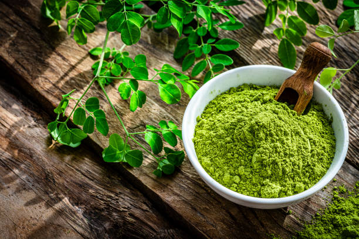
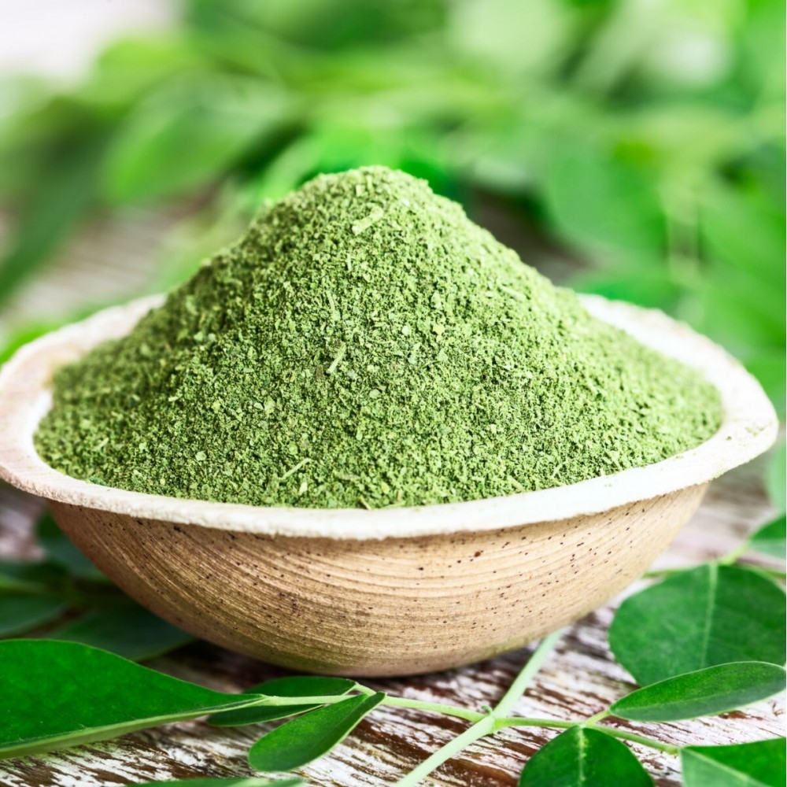

Organic Moringa Leaf Powder
Gently dried to preserve nutrients and vibrant color. Perfect for premium superfood applications.
Color: Bright Green
Shelf Life: 12 Months
MOQ: 100 kg
- High in antioxidants and vitamins
- Used in smoothies, supplements, capsules
- High nutritional preservation due to gentle processing

Natural Moringa Leaf Powder
Retains natural taste and aroma with minimal processing — suitable for health mixes and herbal tea blends.
Drying Method: Air Drying
Shelf Life: 18 Months
MOQ: 100 kg
- Strong herbal aroma & taste
- Used in teas, local formulations
- Minimal industrial refinement
Organic Moringa Powder
Certified organic and finely milled, ideal for nutraceuticals and cosmetics industry.
Shelf Life: 12 Months
MOQ: 200 kg
- High mesh, smooth consistency
- Certified organic & hygienically packed
- Ideal for capsules, tablets, personal care